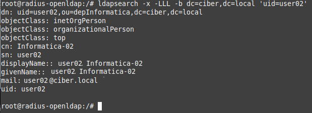

3.2.1 Instalar openLDAP
1. Introducción
OpenLDAP es una implementación de código abierto del protocolo ligero de acceso a directorios (LDAP).
2. Escenario
- Ubuntu Server 20.04.3 con openssl y ssh instalado.
- Dominio a crear: ciber.local
Para este escenario, se van a crear una serie de objetos, a saber: dos unidades organizativas, cuatro usuarios y dos grupos en LDAP usando el siguiente archivo LDIF. El propósito de crear estos usuarios y grupos es permitir que FreeRADIUS autorice a usuarios específicos a conectarse a la red WIFI corporativa, en concreto, se permitirá el acceso a la red Wifi a los usuarios del grupo GGProgramacion que pertenecen al departamento de Informática.
Figura 1. Esquema de autenticación de usuarios LDAP.
2. Instalación y configuración del servidor OpenLDAP
Para la instalación y configuración, se van a seguir los siguientes puntos.
1. Cambiar el nombre de host del servidor openLDAP
root@radius-openldap:/#hostnamectl set-hostname radius-openldap.ciber.local
2. Añadir en el fichero de /etc/hosts la siguiente línea:
192.168.0.101 radius-openldap.ciber.local
Figura 2. Fichero hosts.
3. Instalar los paquetes necesarios (LDAP y utilidades)
Antes de proceder con la instalación, se realiza una actualización de los respositorios.
root@radius-openldap:/#apt update -y
root@radius-openldap:/#apt install slapd ldap-utils
Figura 3. Instalación de LDAP y utilidades.
Durante la instalación, hay que introducir la contraseña del administrador admin 2 veces. Este es el usuario que se empleará para gestionar openLDAP.
| Figura 4. Insertar la contraseña del administrador de LDAP. | |
Una vez se finaliza el proceso, ya se está en disposición de crear objetos y gestionar openLDAP.
Si se necesitara configurar el servidor openLDAP, se tiene el siguiente comando:
root@radius-openldap:/#dpkg-reconfigure slapd
Figura 5. Reconfigurar el servidor openLDAP.
4. Crear los objetos en openLDAP
Una vez se ha creado el fichero ldif con los objetos del dominio, hay que ejecutar el siguiente comando para que se creen. Al ejecutar el comando, el sistema solicita la contraseña del usuario administrador del servidor openLDAP.
root@radius-openldap:/#ldapadd -x -D cn=admin,dc=ciber,dc=local -W -f create_ldap_objects.ldif
donde,
- create_ldap_objects.ldif: Es el fichero con la definición de los objetos a crear.
- cn=admin: Es el usuario administrador del servidor openLDAP.
- dc=ciber,dc=local. Es el dominio del escenario actual.
Figura 6. Creación de objetos en openLDAP.
3. Consultas LDAP
La utilidad para consultar dentro de LDAP es ldapsearch, su sinopsis es:
ldapsearch [-V[V]] [-d debuglevel] [-n] [-v] [-c] [-u] [-t[t]]
[-T path] [-F prefix] [-A] [-L[L[L]]] [-S attribute] [-b searchbase]
[-s {base|one|sub|children}] [-a {never|always|search|find}] [-l time-
limit] [-z sizelimit] [-f file] [-M[M]] [-x] [-D binddn] [-W]
[-w passwd] [-y passwdfile] [-H ldapuri] [-h ldaphost] [-p ldapport]
[-P {2|3}] [-e [!]ext[=extparam]] [-E [!]ext[=extparam]] [-o opt[=opt-
param]] [-O security-properties] [-I] [-Q] [-N] [-U authcid] [-R realm]
[-X authzid] [-Y mech] [-Z[Z]] filter [attrs...]
El comando ldapsearch, abre una conexión a un servidor LDAP enlazando y ejecutando una búsqueda en el mismo usando los parámetros especificados. El filtro debe ajustarse a la representación de cadena de filtros de búsqueda de RFC 4515. Si la consulta encuentra alguna coincidencia, muestra los atributos pedidos, si no se especifican atributos, los muestra todos. Los resultados los muestra en formato LDIF.
ldapsearch tiene multitud de parámetros. Los que más interesan son:
- -x Simple autentificación. En vez de con SASL.
- -LLL La primera L restringe la salida a LDIF, la segunda quita los comentarios y la tercera desactiva la impresión de la versión de LDIF.
- -H Especifica la URI del servidor LDAP. Si es local se puede poner ldap:///
- -D En caso de que sea necesario autentificarse para buscar dentro del directorio, con -D se puede poner el DN del usuario con el que nos autentificamos.
- -w Para poner la contraseña para autentificarse.
- -W Para no ponerla y que nos la pida por la terminal.
- -b Para especificar la base a partir de la que se busca.
Ejemplo: Si se desea obtener información del dominio, el comando es:
root@radius-openldap:/#ldapsearch -x -LLL -b dc=ciber,dc=local
Figura 7. Consulta sobre el dominio.
donde,
- dc=ciber,dc=local. Es el dominio del escenario actual.
Si se desea consultar un usuario en concreto, el comando es:
root@radius-openldap:/#ldapsearch -x -LLL -b dc=ciber,dc=local 'uid=user02'

Figura 8. Consulta del usuarios user02.
Por último, si se desea realizar una consulta que devuelva los objetos, el comando es:
root@radius-openldap:/#ldapsearch -x -h localhost -b "dc=ciber,dc=local" "*" | grep dn | cut -d' ' -f'2-'
Figura 9. Consulta los objetos del dominio.
4. Referencias
Obra publicada con Licencia Creative Commons Reconocimiento No comercial Compartir igual 4.0